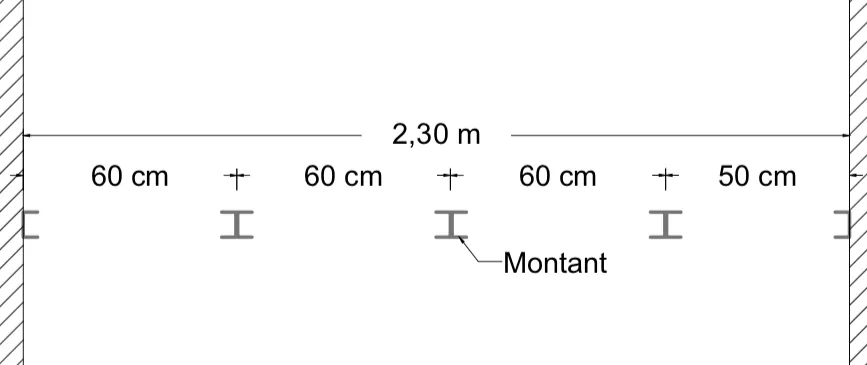
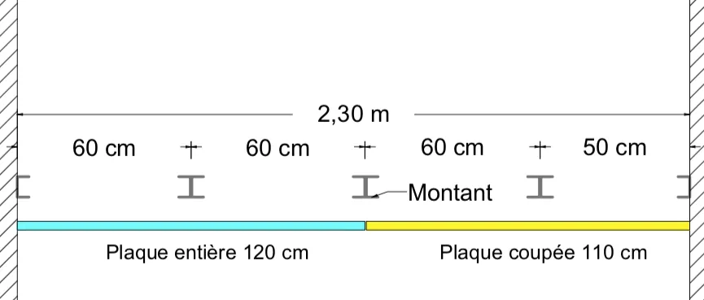
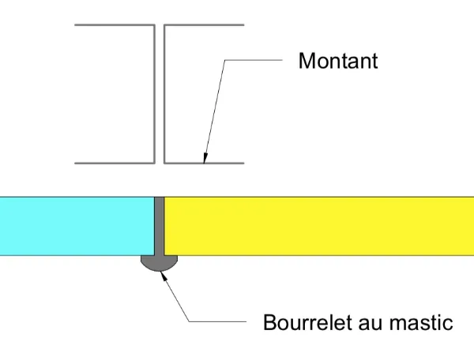
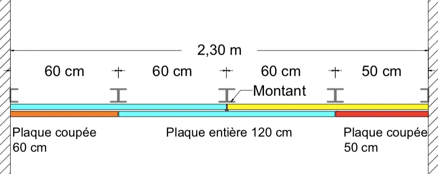

Qu'est ce qu'une cloison acoustique ?
Que ce soit en logement collectif ou en maison individuelle, en rénovation ou en construction neuve, les raisons de réaliser des cloisons acoustiques sont nombreuses.
Du point de vue réglementaire, il y a lieu de différencier :
- La réglementation acoustique des bâtiments d’habitation neufs : Arrêté du 30 juin 1999 relatif aux caractéristiques acoustiques des bâtiments d'habitation,
- La réglementation acoustique des bâtiments autres que d’habitation : Arrêté du 25 avril 2003 relatif à la limitation du bruit dans les établissements d'enseignement, Arrêté du 25 avril 2003 relatif à la limitation du bruit dans les établissements de santé, Arrêté du 25 avril 2003 relatif à la limitation du bruit dans les hôtels (en rapport avec la Circulaire du 25 avril 2003 relative à l'application de la réglementation acoustique des bâtiments autres que d'habitation).
Les différents arrêtés précisent le niveau de pression acoustique normalisé, LnAT, à ne pas dépasser selon le type d'établissement. Celui-ci est mesuré en décibels (dB), selon le guide des mesures acoustiques d'Août 2004.
Pour les Maîtres d'Ouvrages, le Ministère de la transition écologique et solidaire précise que :
"Pour les bâtiments d’habitation dont le permis de construire est déposé depuis le 1er janvier 2013, les maîtres d’ouvrage ont l’obligation de fournir, à l’achèvement des travaux, à l’autorité ayant délivré l’autorisation de construire une attestation de prise en compte de la réglementation acoustique.
L’attestation s’appuie sur des constats effectués en phases études et chantier, et, pour les opérations d’au moins 10 logements, sur des mesures acoustiques réalisées à la fin des travaux de construction."
D'un point de vue technique, une cloison acoustique peut être réaliser comme une cloison "classique" en ajoutant une seconde plaque de plâtre et quelques astuces (détaillées ci-dessous).
Nous prendrons ici l'exemple d'une cloison acoustique de 2,30m de large, réalisée avec deux peaux de BA13.
Pour une isolation phonique maximale, les fournisseurs proposent également des gammes de plaques de plâtre phoniques : KNAUF Phonik, PLACO Phonique...
Les montants
En respectant les prescriptions de pose du fournisseur, les montants sont à disposer comme pour une cloison "classique" !
En partant d'un mur, espacez les montants avec un entraxe de 60cm, jusqu'à arriver à l'autre bout de la cloison et réduire le dernier entraxe (de gauche à droite sur le schéma ci-dessous)
Bien entendu, pour assurer la qualité acoustique de la cloison, celle-ci doit être réalisée avant la pose du faux-plafond.
Dans le même esprit, si une chape va être coulée après la réalisation de la cloison, n'oubliez pas de mettre en place un film polyéthylène en pied de cloison !
Le schéma ci-dessous est une vue en plan.

La première peau
Commencez par ajouter une plaque de plâtre entière de 120cm de large, en partant du côté gauche sur le schéma ci-dessous.
Votre plaque de plâtre sera peut être trop haute : après l'avoir coupée, il est conseillé de disposer l'arête coupée en bas. De cette façon, la jonction avec le plafond en haut de la cloison sera parfaite !
Lorsque la plaque de plâtre superpose deux montants adossés, il est préférable de la fixer sur chaque montant, en quinconce.
Enfin, en pied de cloison, la dernière vis fixée sur le montant doit être à minimum 5 cm du sol !

La seconde peau
Avant la pose de la seconde peau, utilisez du mastic ou du MAP (Mortier Adhésif Placoplatre) pour combler l'espace entre les plaques de plâtre : entre les plaque mais aussi en pied et en tête de cloison.
Il ne faut pas oublier que le bruit est une onde qui se propage lorsqu'elle rencontre du vide : en réalisant ces bourrelets, vous réduirez donc les espaces vides !

Laissez le bourrelet dépasser légèrement comme sur le schéma ci-dessus, lorsque vous poserez la seconde peau celle-ci viendra se positionner contre les bourrelets pour garantir une isolation acoustique optimale !
Enfin, pour poser la seconde peau, commencez par le même côté que pour la première peau, en découpant une plaque de plâtre de 60cm de largeur (côté gauche sur le schéma ci-dessous). De cette façon, les joints entre les plaques seront en quinconce.
Ensuite, posez une plaque de plâtre entière et ainsi de suite pour arriver jusqu'à l'autre extrémité de la cloison.
Vous l'aurez compris, l'idée est d'entrecroiser les plaques de plâtre !

Par la suite, réalisez vos bandes comme pour une cloison "classique".
Avec ces astuces, l'isolation phonique de votre cloison devrait être maximale !